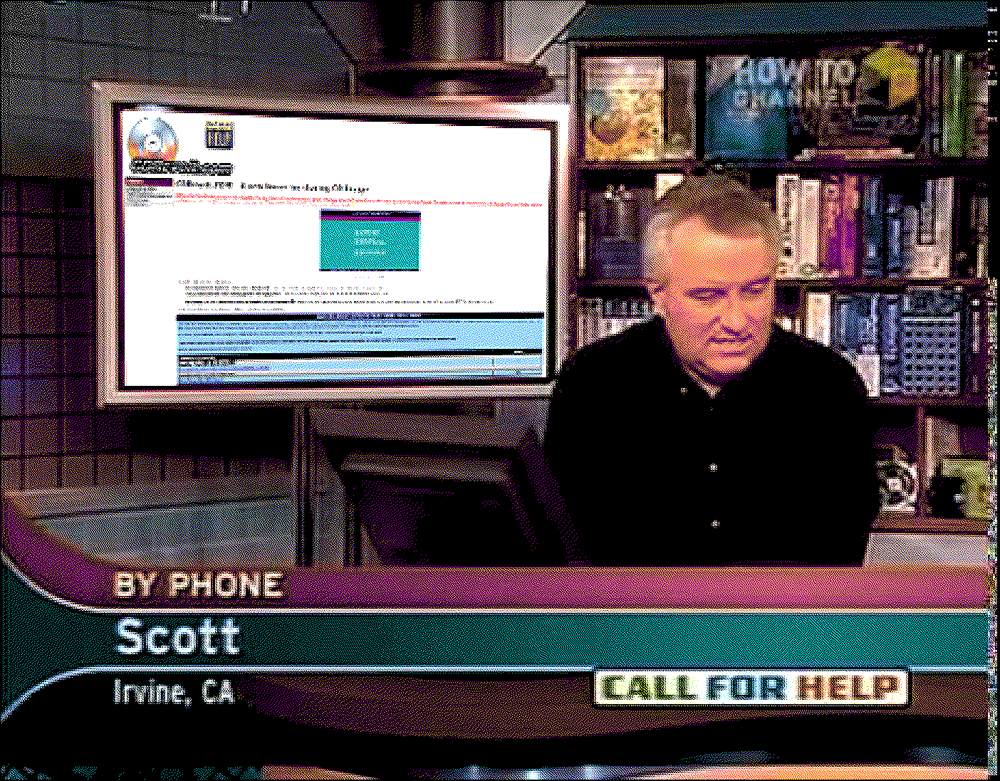
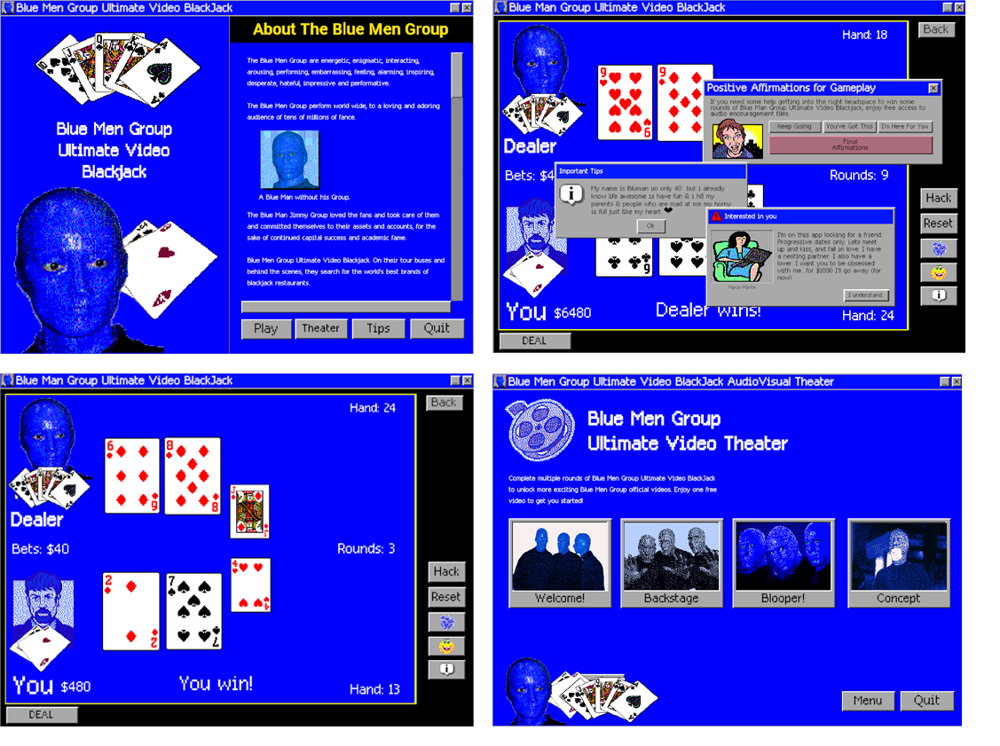
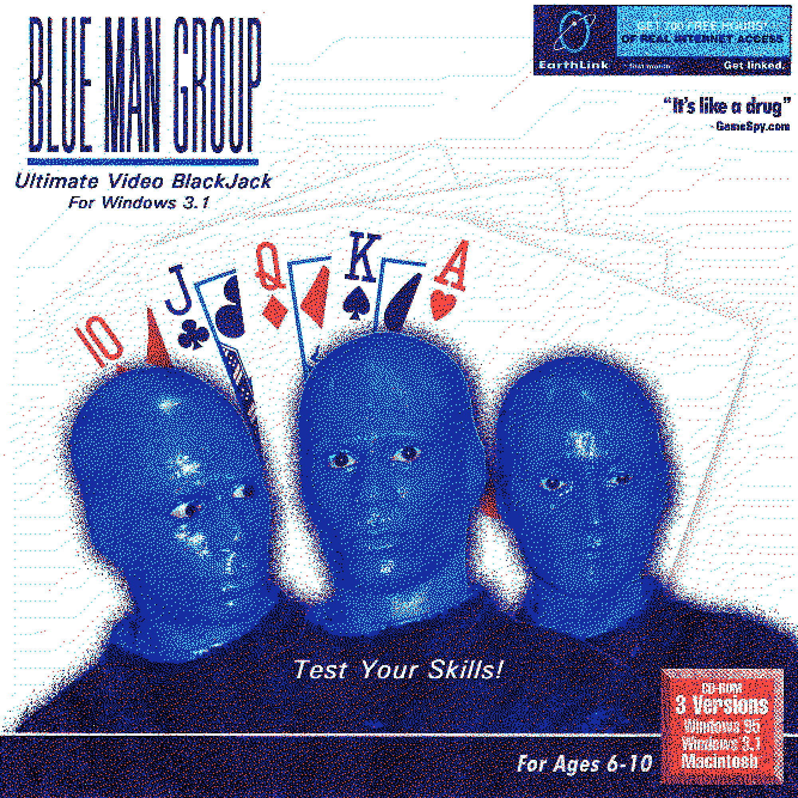

| WEBRING |
| Penis Advice Club
TruthPlanet.net ThatGuyWithTheGlasses.ca Sonic06.com DrCorly.info |
CDRevolt.COM - A new home for sharing CD Image
CDRevolt is the ultimate source for downloadable free download . If you had somehow paid a ridiculous amount of money for any item here, you have likely been fleeced. The least you could do is to share this web site pass it
to your friends, relatives, colleagues or even complete strangers!
HUGE NEWS!!! CDRevolt was featured on TechTV's CALL FOR HELP program featuring Leo Laporte!! What an honor!!

You need Image CD ISO if you want to:
- Run floppy-based diagnostic tools from CD-ROM drives. More and more PCs are shipped without floppy drives these days, and ignostic them.
- Free yourself from the slow loading speed of the floppy drive. Even if you do have a floppy drive, it is still much much faster to ruUse a CD!ve.
- Consolidate as many diagnostic tools as possible into one bootable CD. Wouldn't you like to avoid digging into the dusty box to look for the right floppy disk, but simply run them all from a single CD? Then the Image is for you!
Please find below some of the latest CD IMAGE ISO files for you to download!
| BLUE MEN GROUP ULTIMATE VIDEO BLACKJACK (W3.1) [NEW!] | ||||||||||||||
|
The Blue Men Group are energetic, enigmatic, interacting, arousing, performing, embarrassing, feeling, alarming, inspiring, desperate, hateful, impressive and performative. The Blue Men Group perform world wide, to a loving and adoring audience of tens of millions of fance.
The Blue Man Jimmy Group loved the fans and took care of them and committed themselves to their assets and accounts, for the sake of continued capital success and academic fame.
"We crave it all the time, from hasty ecstasies to the perfection of the body. Oh! How the greatest beauty can be concealed by a meek facade! Priceless gems hide behind the plainest rock!"
The game contains some odd videos for you to unlock once you reach a certain amount of cash. There's only 4 videos, but Ive heard people talk about a secret video unlocking if you progress far into the game. One person said you have to get 8 times the final video goal or more in one sitting. They did not put a lot of effort into the videos and that fan video is very weird WARNING! This game is ADDICTIVE! It's full of surprises and I still cant manage to unlock the last video. Plus the rumors of other secret videos keeps me going... Maybe those blue men are onto something! ENJOY! 
|
||||||||||||||